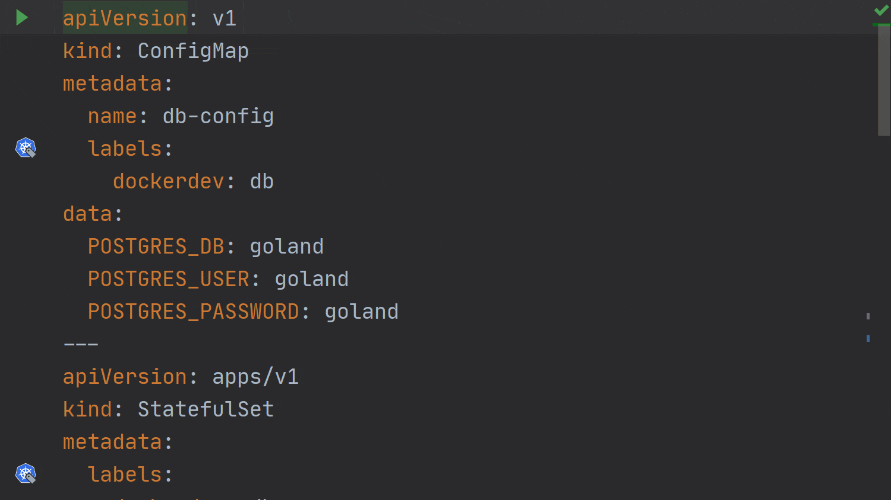

当 GoLand 遇到 Kubernetes：如何调试和运行 Go 程序
这是我们使用 Docker，Docker Compose 或 Kubernetes 运行 Go 服务的系列文章的最后一部分。在这一部分中，我们将专注于使用 Kubernetes 集群时的运行和调试。
虽然我们不会介绍如何安装和配置 Kubernetes 集群，但是可以使用各种工具（例如 kubeadm ，minikube 和 microk8s ）来实现这一目标。如果您使用的是 Windows，则 Docker Desktop for Windows 附带内置的 Kubernetes 支持 。如果您打算使用基于 ARM 芯片的平台（例如 Raspberry Pi 4 ），则可以使用 k3s 之类的东西来入门。
在开始之前，还应该安装 Kubernetes 插件，因为它没有与 IDE 捆绑在一起。您可以通过打开 Settings/Preferences | Plugins | Marketplace并搜索 Kubernetes 找到并安装插件。
在 IDE 中使用 Kubernetes 运行服务
如果您到目前为止一直在关注本系列，那么您会知道所有代码都可以在此 下载和使用，使用 Kubernetes 也是这种情况。我们可以从 kubernetes 分支 开始。
在这里我们可以找到两个不同的文件：db.yaml 和 web.yaml。这些文件包含了我们开始使用 Kubernetes 集群中的应用程序所需的所有定义。为了方便起见，他们还假定 Kubernetes 与 IDE 在同一台计算机上运行。
打开 db.yaml：
apiVersion: v1
kind: ConfigMap
metadata:
name: db-config
labels:
dockerdev: db
data:
POSTGRES_DB: goland
POSTGRES_USER: goland
POSTGRES_PASSWORD: goland
---
apiVersion: apps/v1
kind: StatefulSet
metadata:
labels:
dockerdev: db
name: db
spec:
serviceName: dockerdev-db
selector:
matchLabels:
dockerdev: db
template:
metadata:
labels:
dockerdev: db
spec:
containers:
- name: db
image: postgres:12.2-alpine
imagePullPolicy: IfNotPresent
envFrom:
- configMapRef:
name: db-config
ports:
- containerPort: 5432
volumeMounts:
- name: db-init
mountPath: /docker-entrypoint-initdb.d/init.sql
subPath: init.sql
volumes:
- name: db-init
hostPath:
path: /d/GoLandProjects/dockerdev
---
apiVersion: v1
kind: Service
metadata:
labels:
dockerdev: db
name: dockerdev-db-exported
spec:
type: NodePort
ports:
- name: 5432-tcp
port: 5432
targetPort: 5432
nodePort: 30432
selector:
dockerdev: db
注意：在启动此示例之前，我们需要确保更改了 init.sql 文件在主机上的位置。您可以通过将路径：/d/ GoLandProjects / dockerdev 替换为先前克隆该项目的位置的路径来实现。
完成此操作后，我们可以使用文件顶部编辑器装订线上的绿色箭头在 Kubernetes 中部署数据库。
部署数据库将创建一个 StatefulSet 并在 pod 中运行数据库。将出现 “Services Tool” 窗口，并显示用于创建资源的命令以及该命令的输出。
Kubernetes 集群概述
在 Kubernetes 集群中，我们将看到工作负载信息，例如正在运行的 Pods, Deployments, Stateful Sets, Daemon Sets, Jobs, Cron Jobs, Replica Sets, 和 Replication Controllers。

我们还可以查看有关集群中服务和入口点的网络信息。

“Configuration” 部分包含当前名称空间或群集的所有配置信息，例如有关运行名称空间，节点，群集角色，角色，配置 map 和秘钥的信息。
最后，“Storage” 部分将向我们显示当前配置中的“持久卷”，“持久卷声明”和“存储类”。

在 IDE 中使用 Kubernetes 集群运行 Go 应用程序
让我们在同一个 Kubernetes 集群中运行 Go 应用程序，看看它是如何工作的。
不过，在运行该应用程序之前，我们首先需要构建该应用程序所在的 Docker 容器。示例代码库中包含一个名为 build Dockerfile 的运行配置，需要运行该配置才能在集群中使用我们的容器。
正如您可能已经猜到的那样，此后，我们终于可以使用先前与 db.yaml 文件一起使用的绿色箭头在 Kubernetes 中运行 Go 应用程序，只有这次我们才在 web.yaml 文件中使用它。
apiVersion: apps/v1
kind: Deployment
metadata:
labels:
dockerdev: web
name: web
spec:
selector:
matchLabels:
dockerdev: web
template:
metadata:
labels:
dockerdev: web
spec:
containers:
- name: dockerdev-web
image: dockerdev-web:latest
imagePullPolicy: Never
env:
- name: DD_DB_HOST
value: "dockerdev-db-exported"
ports:
- containerPort: 8000
---
apiVersion: v1
kind: Service
metadata:
labels:
dockerdev: web
name: dockerdev-web-exported
spec:
type: NodePort
ports:
- name: 8000-tcp
port: 8000
targetPort: 8000
nodePort: 30800
selector:
dockerdev: web

Pro tip：我们可以使用 HTTP 请求文件的方式从 IDE 运行请求，以检查服务是否已启动并正在运行。

从 Kubernetes 调试服务
在使用 GoLand 调试 Kubernetes 服务之前，我们需要对 web.yaml 文件进行一些更改。这些变化可以在我们代码库的 kubernetes-debug 分支中看到。
我们需要进行一些与调试常规 Docker 容器非常相似的更改。
首先，我们需要调整 Dockerfile，然后我们必须使用 Run | Run … | ‘build Dockerfile’ 来配置。
接着我们可以使用 Run | Debug … | Kubernetes Service，它将启动 Go Remote 调试配置。

调试器将跟之前我们习惯的调试形式一样工作。
这个系列文章是我们使用 Docker，Docker Compose 和 Kubernetes 运行和调试 Go 微服务的总结。
在本文中，我们讨论了如何使用 Kubernetes 插件来编辑 Deployment 文件，以便它将正常启动，从而可以对其进行调试。
原文链接：https://blog.jetbrains.com/go/2020/05/11/using-kubernetes-from-goland/
作者：Florin Pățan
翻译：Go语言中文网 polaris